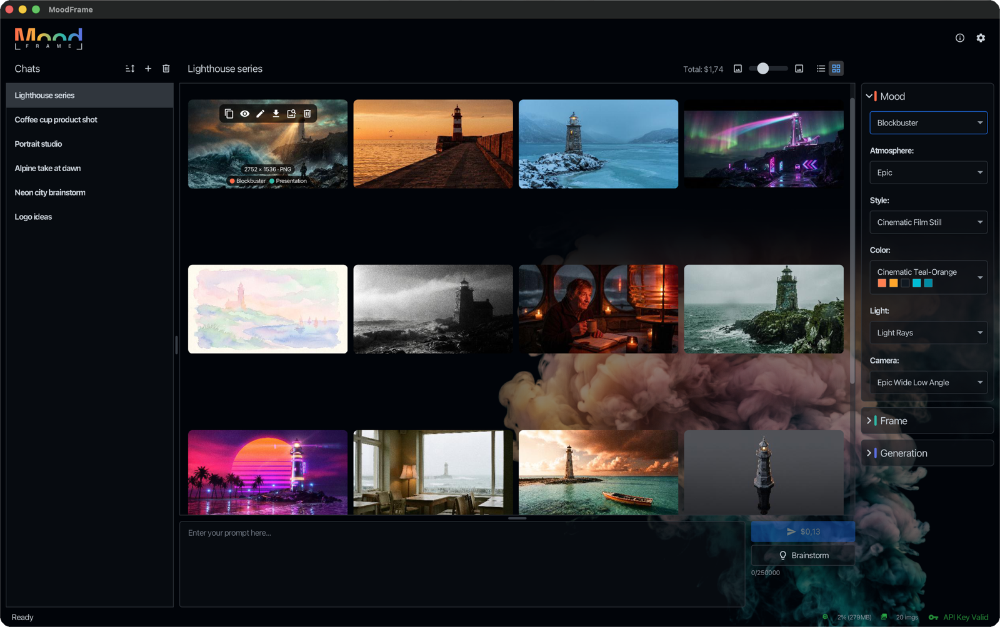

Desktop studio for AI images
Mood in.Frame out.
The mood decides how an image feels, the frame how it is rendered. One app for FLUX, Nano Banana and every OpenAI-compatible image API.
Overview
One studio, every image model
Everything in one window. The chapters below go into the details.

- Library · Chats, or all images of a mood or frame
- Images · each with its mood, model and cost
- Prompt · write what you see, or brainstorm it with AI
- Mood · style, atmosphere, light, color and camera
- Frame · aspect ratio and size
- Models · FLUX, Nano Banana, OpenAI-compatible
Mood
Switch the mood, keep the picture
Same prompt, three moods. A mood is made of building blocks, each one lockable.
Vintage Film
- Style
- Analog Film
- Atmosphere
- Nostalgic
- Light
- Golden Hour
- Color
- Camera
- Street 35mm · Leica M6 · 35 mm · f/11
- Your own blocks and saved moods
- Mood from image: drop a picture, get its mood
- Every image remembers its mood
Frame
Say the format once
A frame is a target aspect ratio and resolution, saved by name.
Every model takes its closest aspect ratio and resolution, and the app shows which one before you generate.
| Model | Gets | |
|---|---|---|
| FLUX.2 [pro] | 16:9 | exact |
| Nano Banana Pro | 16:9 | exact |
| OpenAI gpt-image | 3:2 | closest |
- Saved frames for your recurring formats
- Group your library by frame
Models
Bring your own API key
Three providers in one app. Your keys stay on your machine, encrypted.
Install
Up and running in a minute
Version 2.0.0. Free and open source (MIT).
$ curl -L https://moodframe.art/download/launch.mac | bashPaste into a terminal: the command installs and starts MoodFrame.
Or download the .zip: Apple Silicon · Intel. The app is not notarized by Apple, so open it the first time with Control-click → Open.
Runs the installer, which also keeps MoodFrame up to date.
Also as .msix · .appinstaller · .zip
$ CPU=$(dpkg --print-architecture) $ wget https://moodframe.art/download/debian/moodframe_2.0.0_${CPU}.deb $ sudo apt install ./moodframe_2.0.0_${CPU}.deb
For Debian and Ubuntu; updates come with apt.
Other distributions: .tar.gz
📦 Packaged with Conveyor by Hydraulic · MoodFrame checks for updates on every launch and updates itself